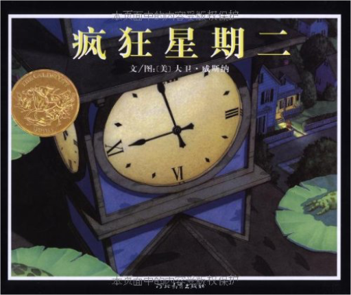
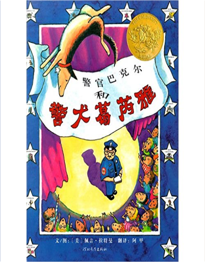
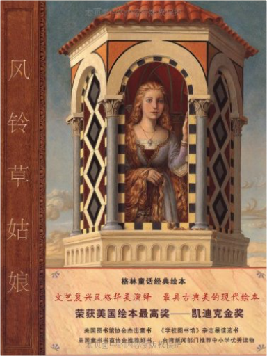
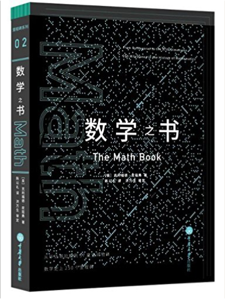
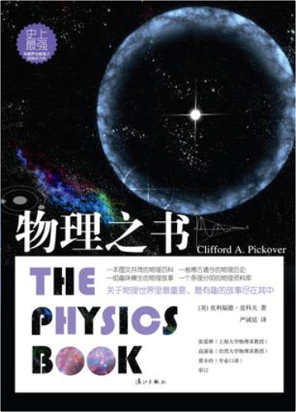
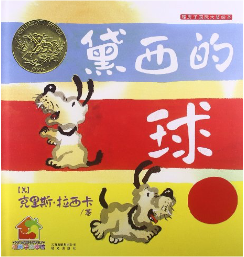
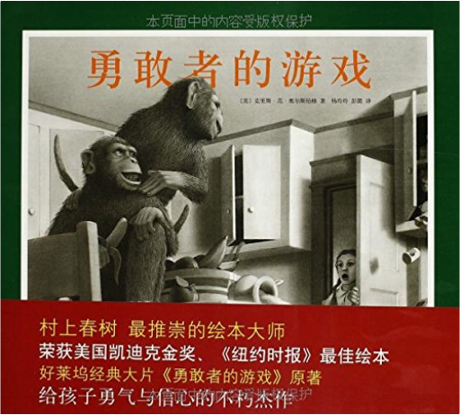

疯狂星期二大卫•威斯纳(David Wiesner)  《疯狂星期二》内容简介：星期二晚上，在荷叶上尽情飞翔的青蛙带你穿越城镇的每个角落，感受一个不平静的夜晚。下一个星期二的晚上，半空中又出现了猪的影子……这本书对于孩子最大的吸引力，是书中梦境般的故事展现。让他们一眼就能明白图画所描述的故事情节，并发自内心地感叹：这些场景简直就和平常梦境中出现的情节一模一样！  绒毛兔玛格丽•威廉斯 (Margery Williams) 绒毛兔玛格丽•威廉斯 (Margery Williams) 《绒毛兔》内容简介：这是只寻找真爱，想变成真的兔子的绒毛兔，诞生于1922年，至今仍是美国最受欢迎的儿童经典故事。绒毛兔本是一个普通的绒毛玩具，但因为与故事中的小男孩建立了诚挚的友谊，居然就真的变成了一只真兔子，从此快乐地和其他兔子生活在大森林里。这个故事虽为小孩儿所写，但是作者希望大人和孩子可以一起阅读，一起被绒毛兔与故事中小男孩的情谊所感动，从中学习接纳自己，相信自己值得被爱。让大人和孩子一同成长，一同懂得什么是真爱。 警官巴克尔和警犬葛芮雅佩吉·拉特曼 《警官巴克尔和警犬葛芮雅》内容简介：常言道：寓教于乐。这似乎已成为当下优良教育的金科玉律。不要说小孩子的学堂，即便是过大年的文艺晚会，也往往要“教中加乐”或“乐中加教”——只是这等加法未必奏效，受众群体浑不买账而致教乐两误，也是常事。推敲起来，很可能是公式用错了，还是改用乘法为好。 风铃草姑娘保罗•欧•泽林斯基 《风铃草姑娘》的故事有着令人惊叹的丰富历史。故事最初的源头已不可考，在长达数百年的流传过程中，曾在意大利、法国和德国出现过多个版本，其中最为著名的是《格林童话》中的《莴苣姑娘》（又名《长发姑娘》）。美国著名绘本大师泽林斯基在详细考察的基础上，撷取各个文本的精华，将美丽的风铃草作为长发姑娘的象征，用自己独特的视角重新阐释了这一古老的故事。书中的画面闪耀着温暖而柔和的金色光泽，人物形象立体丰满，构图均衡和谐，散发出典雅的韵味，让人想起拉斐尔、伦勃朗等文艺复兴大师的名画。作者凭借对人性的深刻把握，用细腻的笔触展现出了人物最为微妙的心理活动，将图像与文字完美地融为一体，使本书成为了童话绘本的典范之作。 数学之书克利福德·皮寇弗 《数学之书》内容简介：人类什么时候在绳子上打下第一个结？为什么第一位女数学家会死于非命？有可能把一个球体的内部翻转出来吗？ 物理之书克利福德·皮科夫 时间旅行是可能的吗？人类第一次瞥见月球的另一面是何时？我们有可能真的生活在电影《黑客帝国》的情节中吗？全能科普鬼才皮科夫在本书中邀请读者们与他一同进行一趟时空旅行，从数亿年前的宇宙大爆炸，到数百万亿年之后宇宙的终结及量子复活。跟着皮科夫的这趟旅程，我们将一同穿梭物理史上250个重大成就！物理是关于万事万物基本道理的科学，从这门学问中可以窥见宇宙事物真相的条理。除此之外，他还讨论了一些难解的物理发现，比如1965年的超级球，这个题目不只牵涉到工程学和应用物理，还带动了人类对天体运行的理解。他也讨论了许多日常生活中的事物，如沙漏、保温瓶、风筝、听诊器等，并解释其中的物理概念，以及它们在人类历史上受到注意的时间点。 暖房子国际大奖绘本:黛西的球克里斯·拉西卡 《黛西的球》（作者：克里斯·拉西卡），其灵感来源于拉西卡的儿子。儿子4岁时，曾拥有一个心爱的球，但是被狗狗不小心给弄坏了，儿子非常伤心和沮丧，这也许是他第一次经历失去某件深爱之物的情感——失去了，而且再也找不回来了。拉西卡以此展开了想象，创作了《黛西的球》。 勇敢者的游戏克里斯·范·奥尔斯伯格 朱迪和彼得在公园里的大树下发现了一副棋，棋盒上写着“侏曼纪·丛林冒险游戏”。这副棋看起来普普通通，可是当彼得的棋子落在“狮子进攻”那一格时，竟然出现了一头真正的大狮子！这到底是怎么回事？随着游戏的进行，蟒蛇、犀牛等可怕的丛林野兽接连到来。而且，如同游戏说明中所说，“游戏一旦开始就不能中止”，朱迪和彼得能否顽强地把游戏进行到底呢？在这部荣获凯迪克金奖的名作中，作家奥尔斯伯格用神奇的画笔，带领读者穿越现实和幻想，进行一次惊心动魄的丛林奇幻之旅。一幅幅细腻生动的铅笔素描，不仅能唤醒孩子心中无限的想象力，还能让孩子体会到不屈不挠的勇气。  极地特快克里斯·范·奥尔斯伯格 极地特快克里斯·范·奥尔斯伯格 世界上到底有没有圣诞老人？我相信有。许多年前的一个平安夜，“极地特快”停在了我家的门口，把我带上了去往北极的旅途。在那儿，我见到了圣诞老人，还收到了他送出的第一份圣诞礼物——雪橇上的银铃……  飞吧红头发(注音版)/国际大奖小说克里斯蒂娜·涅斯特林格 飞吧红头发(注音版)/国际大奖小说克里斯蒂娜·涅斯特林格 女孩弗里德里克和安娜姑妈，以及一只名字叫作“大猫”的猫一起生活。她有一头火红的头发，为此总是受到孩子们的嘲笑和捉弄。有一天，弗里德里克从姑妈口中得知这一头红发原来是具有魔力的，然而，这仍旧无法保护弗里德里克不被大家欺负。邮递员布鲁克**同情她，但除了每天上下学接送她以外也无计可施。后来，弗里德里克在家中发现了一本神秘的红皮书，书上有密码一般的符号，还夹着一封父亲留下的信。弗里德里克、姑妈、大猫和邮递员夫妇想方设法破解了红皮书的秘密，原来，他们可以通过飞行前往一个没有人被嘲笑、大家都互相帮助的国家去…… |


 Made with Delicious Library
Made with Delicious LibraryGuangzhou, AP zipflap congrotus delicious library Yv, Jarod